把 U30 Pro 变成一台自带屏幕的 Linux 路由器
在中兴 U30 Pro（MU5358，紫光展锐 UMS9632）上，OpenWrt 与 Android 并存。移动数据、Wi-Fi 6 热点、 USB 上的 SSH，再加上随身热点的圆形屏幕：一个路由器仪表盘，有中文、英文和土耳其文。Android 原样保留， 每次重启都会自动回到 Android。
MU300 Linux（中兴 F50 和 U30 Air）的姊妹项目，同样由土耳其的一个人开发。
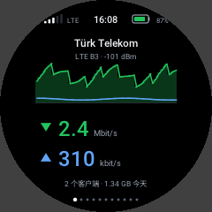
现状：一个能用的研究性移植
它已经做得不错的地方：3 小时的持续运行测试，每一项检查（USB、网络注册、移动数据、ping、Wi-Fi）都是绿的，没有内核 oops， NV 分区逐字节未变，内存占用平稳；连续六次重启，每次都自行全部启动完毕。
能做什么
- 移动数据（LTE）Android 自己的基带守护进程在 chroot 中运行，与 MU300 Linux 相同。同一位置 Android 为 11-12 Mbit/s，这里为 14-19 Mbit/s。
- Wi-Fi 6 热点AIC8800D80X2，5 GHz，HE80，WPA2，使用主板自己的 MAC 地址和校准数据。
- 屏幕圆形屏幕上的仪表盘，有中文、英文和土耳其文：带实时速率曲线的主页、网络、Wi-Fi（带扫码加入的二维码）、客户端、流量、短信、电池、系统、设置、电源和日志。一个 1.6 MB 的可执行文件，约 6 MB 内存，亮屏时占 0.5 % 的 CPU。启动器外观的"经典"界面仍可选用。
- 按键电源键：屏幕开/关，长按：关机。Wi-Fi 键长按：热点关/开。
- USB 网络和 SSH接到电脑上：
ssh root@192.168.58.1，另有串口控制台。 - GPUMali-G57，通过 Android 的驱动提供 OpenGL ES 3.2、EGL 1.5 和 Vulkan，按需加载。
- Android 原样保留Linux 只会作为一次性的试启动运行；重启、关机、内核 oops 或启动失败，最终都回到 Android。
- 尚未做到休眠和省电、100 % 以下的充电验证、长时间纯电池运行、蓝牙、NFC、SIM 卡托检测、USB OTG、通话和音频、发送短信、OpenCL。
屏幕
U30 Pro 有一块 240×240 的圆形屏幕和一个触摸面板。在 Linux 下，它是一个路由器仪表盘：u30ui2，用 C 写成，直接画在内核的
DRM 上，有简体中文、英文和土耳其文（语言是屏幕上的一项设置）。左右滑动换页，下滑回到主页或关闭打开的内容。开机时锁定（长按解锁），
两分钟没有触摸就再次锁定；电源键点亮或熄灭屏幕，超时则自动熄屏。
它是新的：仪表盘在 2026-10-30 取代启动器外观的界面成为默认，到目前为止只在一台设备上跑过。整个程序是一个 1.6 MB 的静态可执行文件 （字体在内），约 6 MB 内存；亮屏且主页的实时曲线在动时占 0.5 % 的 CPU；熄屏时什么也不画，数据读取放慢到每 30 秒一次。 下面的图片是它在电脑上的预览，用的是示例数据。
主页 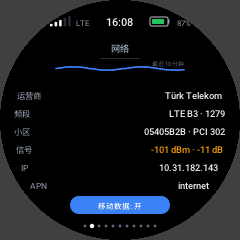
网络 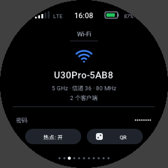
Wi-Fi 扫码加入 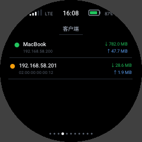
客户端 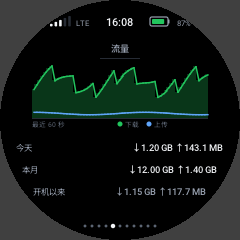
流量 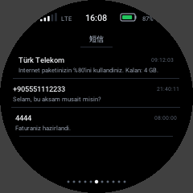
短信 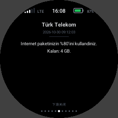
打开的一条短信 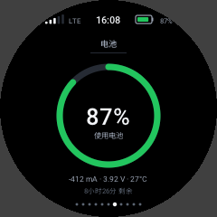
电池 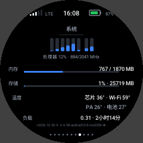
系统 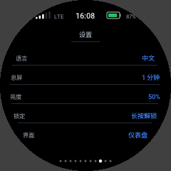
设置 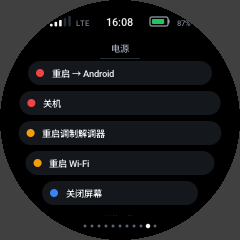
电源 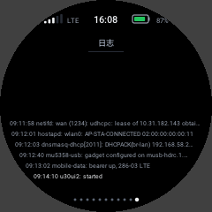
日志
经典界面
最初的界面 u30ui，按 U30 的 Android 启动器的外观做成（相同的花瓣、颜色和页面，但没有 Android），作为"经典"界面保留在系统里。
两个界面的设置页都能切换到另一个。

主屏幕 
状态 
扫码加入 
短信 
电池 
电源操作
有个细节值得一提：这块面板是倒着装的，而在 CPU 上把画面转过来，会让每一帧动态画面都撕裂，因为那样各行到达面板的顺序 正好与它自身的扫描方向相反。现在改由面板自己旋转画面（它的 MADCTL 寄存器，由一个很小的内核模块设置），撕裂就没有了。
启动过程
Android 请求一次槽位 b
在已 root 的 Android 中，一条一次性的“试一次槽位 b”请求被写入
misc分区。LK 启动槽位 b
主板自己的 GKI 6.6 内核，加一个小片段重新构建，配上我们的
init_boot_bramdisk。ramdisk 立刻把它改回去
它加载厂商模块，启动 USB，并在开机 1.6 秒时就把
misc改回 Android，赶在任何问题发生之前。OpenWrt 启动
从 eMMC 上
userdata之后属于它自己的区域启动。基带拿到的 NV 分区只是内存中的副本；真正的 NV 从不被写入。
槽位 a 和 NV 分区从不被写入。任何重启、关机、内核 oops（内核遇到 oops 会重启）或启动失败，最终都回到 Android。
自己构建
给想跟进这项工作的人。每一步都在装有 Docker 和 adb 的电脑上进行，对象是一台已 root 的 U30 Pro，并且先做完整备份。
- 备份全部内容：
tools/backup-full.sh OUTDIR（每个分区，并与设备上计算的哈希值核对）。 - 内核：在
kernel/Dockerfile的容器里运行kernel/build.sh（设备自身提交点的 GKI android15-6.6，加上kernel/mu5358-linux.fragment）。 - 启动镜像：
boot/build-initboot.py用原厂镜像和boot/init生成init_boot_b（以及boot_b）。 - 根文件系统：
openwrt/build-rootfs.sh基于 MU300 Linux 的 OpenWrt 发布版本；openwrt/customize.sh把它改成这块主板的。 - Android 的文件（基带守护进程、固件、GPU 驱动）：由
modem/和gpu/里的脚本从您自己的设备上提取。它们不在仓库里。
系统实际运行的情况（服务、硬件状态、已知行为、日志在哪里）写在 docs/GKI-SYSTEM.md。
常见问题
它和 MU300 Linux 是一回事吗？
它建立在 MU300 Linux 的 OpenWrt 和基带工具之上， 但 U30 Pro 是另一颗芯片（UMS9632）、另一颗 Wi-Fi 芯片，多了屏幕和触摸面板，Android 也更新（15），用的是 GKI 内核。 所以内核部分、启动路径、基带的 NV 处理、Wi-Fi 以及屏幕上的一切都是新的。MU300 Linux 不支持 U30 Pro。
会把我的设备变砖吗？
本项目从不写入槽位 a 和 NV 分区，也从不把 Linux 设为默认启动。 尽管如此，在已 root 的设备上写分区从来都不是零风险；所以第一步永远是完整备份。
为什么是 OpenWrt 而不是 Ubuntu？
它轻量（整个系统空闲时只占几十 MB），本身就是路由器系统， 而且 MU300 Linux 的 OpenWrt 已经带着基带工具。Ubuntu 可能以后会有。
什么时候会有安装器？
等纯电池运行和充电验证通过、24 小时持续运行测试通过之后。 请关注仓库的动态。